전기기사 (2016-05-08 기출문제)
1과목: 전기자기학
1. 자기 모멘트 9.8×10-5[Wb ㆍ m]의 막대자석을 지구자계의 수평성분 10.5[AT/m]인 곳에서 지자기 자오면으로부터 90° 회전시키는데 필요한 일은 약 몇 [J]인가?
- 1.03 × 10-3
- 1.03 × 10-5
- 9.03 × 10-3
- 9.03 × 10-5
(정답률: 74%)

2. 두 종류의 유전율
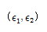
을 가진 유전체 경계면에 진전하가 존재하지 않을 때 성립하는 경계조건을 옳게 나타낸 것은? (단, θ1,θ2는 각각 유전체 경계면의 법선 벡터와 E1,E2가 이루는 각이다.)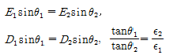
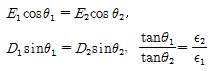
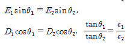
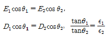
(정답률: 83%)
3. 무한히 넓은 두 장의 평면판 도체를 간격 d[m]로 평행하게 배치하고 각각의 평면판에 면전하 밀도
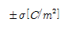
로 분포되어 있는 경우 전기력선은 면에 수직으로 나와 평행하게 발산한다. 이 평면판 내부의 전계의 세기는 몇 [V/m]인가?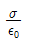
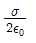
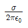
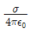
(정답률: 55%)
4. 단면적 S[m2], 단위 길이당 권수가 n0인 무한히 긴 솔레노이드의 자기 인덕턴스[H/m]를 구하면?
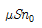
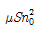
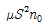
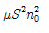
(정답률: 84%)
5. 평행판 콘덴서에 어떤 유전체를 넣었을 때 전속밀도가 4.8×10-7[C/m2]이고 단위 체적당 정전 에너지가 5.3×10-3[J/m3]이었다. 이 유전체의 유전율은 몇 [F/m]인가?
- 1.15 × 10-11
- 2.17 × 10-11
- 3.19 × 10-11
- 4.21 × 10-11
(정답률: 73%)
6. 자유공간 중에 x=2, z=4인 무한장 직선상에 PL[C/m]인 균일한 선전하가 있다. 점(0, 0, 4)의 전계 E[V/m]는?
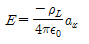
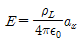
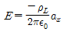
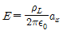
(정답률: 45%)
7. 전자파의 특성에 대한 설명으로 틀린 것은?
- 전자파의 속도는 주파수와 무관하다.
- 전파 Ex를 고유 임피던스로 나누면 자파 Hy가 된다.
- 전파 Ex와 자파 Hy의 진동방향은 진행 방향에 수평인 종파이다.
- 매질이 도전성을 갖지 않으면 전파 Ex와 자파 Hy는 동위상이 된다.
(정답률: 76%)
8. 전위 V=3xy＋z＋4일 때 전계 E는?
- i3x ＋ i3y ＋ k
- -i3y + i3x + k
- i3x - j3y - k
- -i3y - j3x - k
(정답률: 68%)
9. 쌍극자 모멘트가 M[C ㆍ m]인 전기쌍극자에서 점 P의 전계는
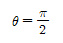
에서 어떻게 되는가? (단,θ 는 전기 쌍극자의 중심에서 축 방향과 점 P를 잇는 선분의 사이각이다.)- 0
- 최소
- 최대
- -∞
(정답률: 62%)
10. 감자력이 0인 것은?
- 구 자성체
- 환상 철심
- 타원 자성체
- 굵고 짧은 막대 자성체
(정답률: 68%)
11. 그림과 같이 반지름 10cm인 반원과 그 양단으로부터 직선으로 된 도선에 10A의 전류가 흐를 때, 중심 0에서의 자계의 세기와 방향은?
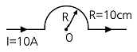
- 2.5 AT/m, 방향 ⊙
- 25 AT/m, 방향 ⊙
- 2.5 AT/m, 방향 ⊗
- 25 AT/m, 방향 ⊗
(정답률: 61%)
12. W1과W2 의 에너지를 갖는 두 콘덴서를 병렬 연결한 경우의 총 에너지 W와의 관계로 옳은 것은? (단, W1 ≠ W2 이다.)
- W1 +W2 = W
- W1 + W2 ＞ W
- W1 - W2 = W
- W1 + W2 ＜ W
(정답률: 66%)
13. 한변이 L[m]되는 정사각형의 도선회로에 전류 I[A]가 흐르고 있을 때 회로 중심에서의 자속밀도는 몇 [Wb/m2]인가?(오류 신고가 접수된 문제입니다. 반드시 정답과 해설을 확인하시기 바랍니다.)
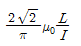
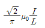
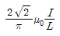
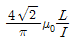
(정답률: 75%)
14. 그림과 같은 원통상 도선 한 가닥이 유전율
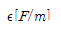
인 매질 내에 지상 h[m] 높이로 지면과 나란히 가선되어 있을 때 대지와 도선간의 단위 길이당 정전용량 [F/m]은?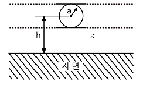
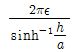
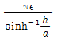
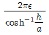
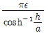
(정답률: 54%)
15. 환상 철심에 권선수 20인 A코일과 권선수 80인 B코일이 감겨 있을 때, A코일의 자기인덕턴스가 5mH라면 두 코일의 상호 인덕턴스는 몇 mH인가? (단, 누설자속은 없는 것으로 본다.)
- 20
- 1.25
- 0.8
- 0.⑤
(정답률: 70%)
16. 자기 회로에서 키르히호프의 법칙에 대한 설명으로 옳은 것은?
- 임의의 결합점으로 유입하는 자속의 대수합은 0이다.
- 임의의 폐자로에서 자속과 기자력의 대수합은 0이다.
- 임의의 폐자로에서 자기저항과 기자력의 대수합은 0이다.
- 임의의 폐자로에서 각 부의 자기저항과 자속의 대수합은 0이다.
(정답률: 59%)
17. 다음 식 중에서 틀린 것은?
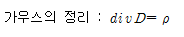
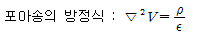
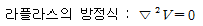
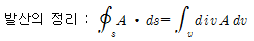
(정답률: 80%)
18. 표피 효과에 대한 설명으로 옳은 것은?
- 주파수가 높을수록 침투 깊이가 얇아진다.
- 투자율이 크면 표피효과가 적게 나타난다.
- 표피 효과에 따른 표피 저항은 단면적에 비례한다.
- 도전율이 큰 도체에는 표피효과가 적게 나타난다.
(정답률: 77%)
19. 패러데이 관에 대한 설명으로 틀린 것은?
- 관내의 전속수는 일정하다.
- 관의 밀도는 전속밀도와 같다.
- 진전하가 없는 점에서 불연속이다.
- 관 양단에 양(+), 음(-)의 단위전하가 있다.
(정답률: 74%)
20. 압전 효과를 이용하지 않은 것은?
- 수정 발진기
- 마이크로 폰
- 초음파 발생기
- 자속계
(정답률: 62%)
2과목: 전력공학
21. 3상 3선식 송전선로의 선간거리가 각각 50cm, 60cm, 70cm인 경우 기하학적 평균 선간거리는 약 몇 cm인가?
- 50.4
- 59.4
- 62.8
- 64.8
(정답률: 79%)
22. 송전 계통에서 자동재폐로 방식의 장점이 아닌 것은?
- 신뢰도 향상
- 공급 지장 시간의 단축
- 보호 계전 방식의 단순화
- 고장상의 고속도 차단, 고속도 재투입
(정답률: 71%)
23. 수력 발전소에서 흡출관을 사용하는 목적은?
- 압력을 줄인다.
- 유효 낙차를 늘린다. .
- 속도 변동률을 작게 한다.
- 물의 유선을 일정하게 한다.
(정답률: 77%)
24. 초고압용 차단기에 개폐 저항기를 사용하는 주된 이유는?
- 차단속도 증진
- 차단전류 감소
- 이상전압 억제
- 부하설비 증대
(정답률: 77%)
25. 송전단 전압이 66kV이고, 수전단 전압이 62kV로 송전 중이던 선로에서 부하가 급격히 감소하여 수전단 전압이 63.5kV가 되었다. 전압 강하율은 약 몇 %인가?
- 2.28
- 3.94
- 6.06
- 6.45
(정답률: 62%)
26. 이상전압에 대한 방호장치가 아닌 것은?
- 피뢰기
- 가공지선
- 방전 코일
- 서지 흡수기
(정답률: 67%)
27. 154kV 송전선로의 전압을 345kV로 승압하고 같은 손실률로 송전한다고 가정하면 송전전력은 승압전의 약 몇 배 정도인가?
- 2
- 3
- 4
- 5
(정답률: 61%)
28. 초고압 송전선로에 단도체 대신 복도체를 사용할 경우 틀린 것은?
- 전선의 작용 인덕턴스를 감소시킨다.
- 선로의 작용정전용량을 증가시킨다.
- 전선 표면의 전위 경도를 저감시킨다.
- 전선의 코로나 임계 전압을 저감시킨다.
(정답률: 75%)
29. 그림과 같은 정수가 서로 같은 평행 2회선 송전선로의 4단자 정수 중 B에 해당되는 것은?
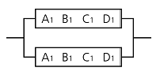
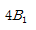
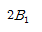
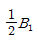
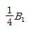
(정답률: 67%)
30. 송전 계통에서 1선 지락 시 유도 장해가 가장 적은 중성점 접지 방식은?
- 비접지 방식
- 저항접지 방식
- 직접접지 방식
- 소호 리액터접지 방식
(정답률: 71%)
31. 송전전압 154kV, 2회선 선로가 있다. 선로 길이가 240㎞이고 선로의 작용 정전용량이 0.02㎌/㎞라고 한다. 이것을 자기 여자를 일으키지 않고 충전하기 위해서는 최소한 몇 MVA이상의 발전기를 이용하여야 하는가?(단, 주파수는 60㎐이다.)
- 78
- 86
- 89
- 95
(정답률: 54%)
32. 방향성을 갖지 않는 계전기는?
- 전력 계전기
- 과전류 계전기
- 비율차동 계전기
- 선택 지락 계전기
(정답률: 50%)
33. 22.9kV-Y 3상 4선식 중성선 다중접지 계통의 특성에 대한 내용으로 틀린 것은?
- 1선 지락 사고 시 1상 단락전류에 해당하는 큰 전류가 흐른다.
- 전원의 중성점과 주상 변압기의 1차 및 2차를 공통의 중성선으로 연결하여 접지한다.
- 각 상에 접속된 부하가 불평형일 때도 불완전 1선 지락 고장의 검출 감도가 상당히 예민하다.
- 고저압 혼촉사고 시에는 중성선에 막대한 전위 상승을 일으켜 수용가에 위험을 줄 우려가 있다.
(정답률: 46%)
34. 선로 전압강하 보상기(LDC)에 대한 설명으로 옳은 것은?
- 승압기로 저하된 전압을 보상하는 것
- 분로 리액터로 전압 상승을 억제하는 것
- 선로의 전압 강하를 고려하여 모선 전압을 조정하는 것
- 직렬 콘덴서로 선로의 리액턴스를 보상하는 것
(정답률: 63%)
35. 송전선로의 현수 애자련 연면 섬락과 가장 관계가 먼 것은?
- 댐퍼
- 철탑 접지 저항
- 현수 애자련의 개수
- 현수 애자련의 소손
(정답률: 78%)
36. 각 전력계통을 연계선으로 상호 연결하면 여러 가지 장점이 있다. 틀린 것은?
- 경계 급전이 용이하다.
- 주파수의 변화가 작아진다.
- 각 전력계통의 신뢰도가 증가한다.
- 배후전력(back power)이 크기 때문에 고장이 적으며 그 영향의 범위가 작아진다.
(정답률: 73%)
37. 유효낙차 100m, 최대 사용수량 20m3/s인 발전소의 최대 출력은 약 몇 kW인가? (단, 수차 및 발전기의 합성 효율은 85%라 한다.)
- 14160
- 16660
- 24990
- 33320
(정답률: 71%)
38. 3상 3선식 송전선로에서 연가의 효과가 아닌 것은?
- 작용 정전용량의 감소
- 각 상의 임피던스 평형
- 통신선의 유도장해 감소
- 직렬공진의 방지
(정답률: 62%)
39. 각 수용가의 수용설비 용량이 50kW, 100kW, 80kW, 60kW, 150kW이며, 각각의 수용률이 0.6, 0.6, 0.5, 0.5, 0.4일 때 부하의 부등률이 1.3이라면 변압기의 용량은 약 몇 [kVA]가 필요한가? (단, 평균 부하 역률은 80%라고 한다.)
- 142
- 165
- 183
- 212
(정답률: 69%)
40. 그림과 같은 주상변압기 2차측 접지공사의 목적은?(관련 규정 개정전 문제로 여기서는 기존 정답인 4번을 누르면 정답 처리됩니다. 자세한 내용은 해설을 참고하세요.)
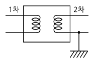
- 1차측 과전류 억제
- 2차측 과전류 억제
- 1차측 전압 상승 억제
- 2차측 전압 상승 억제
(정답률: 68%)
3과목: 전기기기
41. 계자 권선이 전기자에 병렬로만 연결된 직류기는?
- 분권기
- 직권기
- 복권기
- 타여자기
(정답률: 76%)
42. 정격출력 10000kVA, 정격전압 6600V, 정격 역률 0.6인 3상 동기 발전기가 있다. 동기 리액턴스 0.6pㆍu인 경우의 전압 변동률[%]은?
- 21
- 31
- 40
- 52
(정답률: 35%)
43. 직류 분권 발전기에 대한 설명으로 옳은 것은?
- 단자 전압이 강하하면 계자 전류가 증가한다.
- 부하에 의한 전압의 변동이 타여자 발전기에 비하여 크다.
- 타여자 발전기의 경우보다 외부특성 곡선이 상향으로 된다.
- 분권권선의 접속방법에 관계없이 자기여자로 전압을 올릴 수가 있다.
(정답률: 50%)
44. 3상 유도전압 조정기의 동작 원리 중 가장 적당한 것은?
- 두 전류 사이에 작용하는 힘이다.
- 교번 자계의 전자유도 작용을 이용한다.
- 충전된 두 물체 사이에 작용하는 힘이다.
- 회전자계에 의한 유도 작용을 이용하여 2차 전압의 위상전압 조정에 따라 변화한다.
(정답률: 65%)
45. 정격용량 100kVA인 단상 변압기 3대를 △-△ 결선하여 300kVA의 3상 출력을 얻고 있다. 한 상에 고장이 발생하여 결선을 V결선으로 하는 경우 a)뱅크 용량 kVA, b) 각 변압기의 출력 kVA은?
- a) 253, b) 126.5
- a) 200, b) 100
- a) 173, b) 86.6
- a) 152, b) 75.6
(정답률: 76%)
46. 직류기의 전기자 반작용 결과가 아닌 것은?
- 주자속이 감소한다.
- 전기적 중성축이 이동한다.
- 주자속에 영향을 미치지 않는다.
- 정류자편 사이의 전압이 불균일하게 된다.
(정답률: 73%)
47. 자극수 p, 파권, 전기자 도체수가 z인 직류 발전기를 N[rpm]의 회전속도로 무부하 운전할 때 기전력이 E[V]이다. 1극당 주자속[Wb]은?
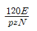
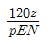
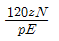
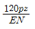
(정답률: 77%)
48. 동기 발전기의 단락비를 계산하는 데 필요한 시험은?
- 부하 시험과 돌발 단락 시험
- 단상 단락 시험과 3상 단락 시험
- 무부하 포화 시험과 3상 단락 시험
- 정상, 역상, 영상 리액턴스의 측정 시험
(정답률: 72%)
49. SCR에 관한 설명으로 틀린 것은?
- 3단자 소자이다.
- 스위칭 소자이다.
- 직류 전압만을 제어한다.
- 적은 게이트 신호로 대전력을 제어한다.
(정답률: 73%)
50. 3상 유도전동기의 기동법 중 Y - △기동법으로 기동 시 1차 권선의 각 상에 가해지는 전압은 기동 시 및 운전시 각각 정격전압의 몇 배가 가해지는가?
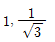
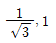
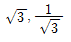
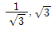
(정답률: 55%)
51. 유도 전동기의 최대 토크를 발생하는 슬립을
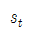
, 최대 출력을 발생하는 슬립을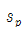
라 하면 대소 관계는?(정답률: 53%)
52. 단권 변압기 2대를 V결선하여 선로 전압 3000V를 3300V로 승압하여 300kVA의 부하에 전력을 공급하려고 한다. 단권 변압기 1대의 자기 용량은 몇 kVA인가?
- 9.09
- 15.72
- 21.72
- 31.50
(정답률: 39%)
53. 단상 전파 정류에서 공급전압이 E일 때, 무부하 직류 전압의 평균값은? (단, 브리지 다이오드를 사용한 전파 정류회로이다.)
- 0.90E
- 0.45E
- 0.75E
- 1.17E
(정답률: 67%)
54. 3상 권선형 유도 전동기의 토크 속도 곡선이 비례추이 한다는 것은 그 곡선이 무엇에 비례해서 이동하는 것을 말하는가?
- 슬립
- 회전수
- 2차 저항
- 공급 전압의 크기
(정답률: 68%)
55. 평형 3상 회로의 전류를 측정하기 위해서 변류비 200 : 5의 변류기를 그림과 같이 접속하였더니 전류계의 지시가 1.5A 이었다. 1차 전류는 몇 A인가?
(정답률: 58%)
56. 동기 조상기의 구조상 특이점이 아닌 것은?
- 고정자는 수차 발전기와 같다.
- 계자 코일이나 자극이 대단히 크다.
- 안전 운전용 제동 권선이 설치된다.
- 전동기 축은 동력을 전달하는 관계로 비교적 굵다.
(정답률: 52%)
57. 정격 200V, 10kW 직류 분권 발전기의 전압 변동률은 몇 %인가? (단, 전기자 및 분권 계자 저항은 각각 0.1Ω, 100Ω이다.)
- 2.6
- 3.0
- 3.6
- 4.5
(정답률: 47%)
58. VVVF(variable voltage variable frequency)는 어떤 전동기의 속도 제어에 사용 되는가?
- 동기 전동기
- 유도 전동기
- 직류 복권 전동기
- 직류 타여자 전동기
(정답률: 63%)
59. 그림은 단상 직권 정류자 전동기의 개념도이다. C를 무엇이라고 하는가?
- 제어 권선
- 보상 권선
- 보극 권선
- 단층 권선
(정답률: 71%)
60. 3300/200V, 10kVA 단상 변압기의 2차를 단락하여 1차측에 300V를 가하니 2차에 120A의 전류가 흘렀다. 이 변압기의 임피던스 전압 및 % 임피던스 강하는 약 얼마인가?
- 125V, 3.8%
- 125V, 3.5%
- 200V, 4.0%
- 200V, 4.2%
(정답률: 36%)
4과목: 회로이론 및 제어공학
61. 나이퀴스트 판정법의 설명으로 틀린 것은?
- 안정성을 판정하는 동시에 안정도를 제시해 준다.
- 계의 안정도를 개선하는 방법에 대한 정보를 제시해 준다.
- 나이퀴스트 선도는 제어계의 오차 응답에 관한 정보를 준다.
- 루스-후르비츠 판정법과 같이 계의 안정여부를 직접 판정해 준다.
(정답률: 57%)
62. 그림의 신호 흐름 선도에서 은?
(정답률: 64%)
63. 폐루프 시스템의 특징으로 틀린 것은?
- 정확성이 증가한다.
- 감쇠폭이 증가한다.
- 발진을 일으키고 불안정한 상태로 되어갈 가능성이 있다.
- 계의 특성변화에 대한 입력 대 출력비의 감도가 증가한다.
(정답률: 40%)
64. 2차 제어계 의 나이퀴스트 선도의 특징이 아닌 것은?
- 이득 여유는 ∞이다.
- 교차량 GH=0이다.
- 모두 불안정한 제어계이다.
- 부의 실축과 교차하지 않는다.
(정답률: 61%)
65. 다음과 같은 상태방정식의 고유값λ1,λ2 는?
- 4,-1
- -4,1
- 6,-1
- -6,1
(정답률: 49%)
66. 단위계단 함수 u(t)를 z변환하면?
(정답률: 67%)
67. 그림과 같은 블록선도로 표시되는 제어계는 무슨 형인가?
- 0
- 1
- 2
- 3
(정답률: 65%)
68. 제어기에서 미분제어의 특성으로 가장 적합한 것은?
- 대역폭이 감소한다.
- 제동을 감소시킨다.
- 작동오차의 변화율에 반응하여 동작한다.
- 정상상태의 오차를 줄이는 효과를 갖는다.
(정답률: 50%)
69. 다음의 설명 중 틀린 것은?
- 최소 위상 함수는 양의 위상 여유이면 안정하다.
- 이득 교차 주파수는 진폭비가 1이 되는 주파수이다.
- 최소 위상 함수는 위상 여유가 0이면 임계 안정하다.
- 최소 위상 함수의 상대 안정도는 위상각의 증가와 함께 작아진다.
(정답률: 50%)
70. 다음 논리회로의 출력 X는?
- A
- B
- A +B
- A ㆍ B
(정답률: 49%)
71. 를 복소수로 나타내면?
(정답률: 62%)
72. 인덕턴스 0.5H, 저항 2Ω의 직렬회로에 30V의 직류전압을 급히 가했을 때 스위치를 닫은 후 0.1초 후의 전류의 순시값 i[A]와 회로의 시정수 t[s]는?
- i = 4.95, t = 0.25
- i = 12.75, t = 0.35
- i = 5.95, t = 0.45
- i = 13.95, t = 0.25
(정답률: 56%)
73. 다음 회로의 4단자 정수는?
(정답률: 58%)
74. 전압의 순시값이 다음과 같을 때 실효값은 약 몇 V인가?
- 11.6
- 13.2
- 16.4
- 20.1
(정답률: 70%)
75. 한상의 임피던스가 인 △부하에 대칭 선간전압 200[V]를 인가할 때 3상 전력[W]은?
- 2400
- 4160
- 7200
- 10800
(정답률: 51%)
76. 그림과 같이 r =1Ω 인 저항을 무한히 연결할 때 a-b에서의 합성저항은?
(정답률: 66%)
77. 3상 불평형 전압에서 역상 전압이 35V이고, 정상전압이 100V, 영상전압이 10V라 할 때, 전압의 불평형률은?
- 0.10
- 0.25
- 0.35
- 0.45
(정답률: 68%)
78. 분포정수회로에서 선로의 단위 길이당 저항을 100Ω, 인덕턴스를 200mH, 누설 컨덕턴스를 0.5℧라 할 때, 일그러짐이 없는 조건을 만족하기 위한 정전용량은 몇 ㎌인가?
- 0.001
- 0.1
- 10
- 1000
(정답률: 47%)
79. f(t)=u(t-a)-u(t-b)의 라플라스 변환 F(s)는?
(정답률: 62%)
80. 4단자 정수 A, B, C, D중에서 어드미턴스 차원을 가진 정수는?
- A
- B
- C
- D
(정답률: 71%)
5과목: 전기설비기술기준 및 판단기준
81. 가공 약전류 전선을 사용전압이 22.9kV인 특고압 가공전선과 동일 지지물에 공가하고자 할 때 가공전선으로 경동연선을 사용한다면 단면적이 몇 mm2 이상인가?(관련 규정 개정전 문제로 여기서는 기존 정답인 4번을 누르면 정답 처리됩니다. 자세한 내용은 해설을 참고하세요.)
- 22
- 38
- 50
- 55
(정답률: 56%)
82. 고압 계기용 변성기의 2차측 전로의 접지 공사는?(오류 신고가 접수된 문제입니다. 반드시 정답과 해설을 확인하시기 바랍니다.)
- 제 1종 접지 공사
- 제 2종 접지 공사
- 제 3종 접지 공사
- 특별 제 3종 접지 공사
(정답률: 40%)
83. 발전소ㆍ변전소 또는 이에 준하는 곳의 특고압 전로에 대한 접속상태를 모의모선의 사용 또는 기타의 방법으로 표시하여야 하는데, 그 표시의 의무가 없는 것은?
- 전선로의 회선수가 3회선 이하로서 복모선
- 전선로의 회선수가 2회선 이하로서 복모선
- 전선로의 회선수가 3회선 이하로서 단일모선
- 전선로의 회선수가 2회선 이하로서 단일모선
(정답률: 58%)
84. ACSR 전선을 사용전압 직류 1500V의 가공 급전선으로 사용할 경우 안전율은 얼마 이상이 되는 이도로 시설하여야 하는가?
- 2.0
- 2.1
- 2.2
- 2.5
(정답률: 45%)
85. 154kV 가공전선과 가공 약전류 전선이 교차하는 경우에 시설하는 보호망을 구성하는 금속선 중 가공 전선의 바로 아래에 시설되는 것 이외의 다른 부분에 시설되는 금속선은 지름 몇 mm 이상의 아연도 철선이어야 하는가?
- 2.6
- 3.2
- 4.0
- 5.0
(정답률: 40%)
86. 사용전압이 161kV인 가공 전선로를 시가지내에 시설할 때 전선의 지표상의 높이는 몇 m 이상이어야 하는가?
- 8.65
- 9.56
- 10.47
- 11.56
(정답률: 53%)
87. 특고압 가공전선이 삭도와 제2차 접근 상태로 시설할 경우에 특고압 가공전선로의 보안공사는?(관련 규정 개정전 문제로 여기서는 기존 정답인 3번을 누르면 정답 처리됩니다. 자세한 내용은 해설을 참고하세요.)
- 고압 보안공사
- 제1종 특고압 보안공사
- 제2종 특고압 보안공사
- 제3종 특고압 보안공사
(정답률: 57%)
88. 갑종 풍압하중을 계산할 때 강관에 의하여 구성된 철탑에서 구성재의 수직 투영면적 1m2에 대한 풍압하중은 몇 Pa를 기초로 하여 계산한 것인가? (단, 단주는 제외한다.)
- 588
- 1117
- 1255
- 2157
(정답률: 61%)
89. 설계하중이 6.8kN인 철근 콘크리트주의 길이가 17m라 한다. 이 지지물을 지반이 연약한 곳 이외의 곳에서 안전율을 고려하지 않고 시설하려고 하면 땅에 묻히는 깊이는 몇 m이상으로 하여야 하는가?
- 2.0
- 2.3
- 2.5
- 2.8
(정답률: 54%)
90. 특고압 가공전선로에서 발생하는 극저주파 전자계는 자계의 경우 지표상 1m에서 측정시 몇 μT 이하인가?
- 28.0
- 46.5
- 70.0
- 83.3
(정답률: 52%)
91. 전로를 대지로부터 반드시 절연하여야 하는 것은?
- 시험용 변압기
- 저압 가공전선로의 접지측 전선
- 전로의 중성점에 접지공사를 하는 경우의 접지점
- 계기용 변성기의 2차측 전로에 접지공사를 하는 경우의 접지점
(정답률: 36%)
92. 저압 전로 중 전선 상호간 및 전로와 대지 사이의 절연저항 값은 대지전압이 150V 초과 300V 이하인 경우에 몇 MΩ이 되어야 하는가?(오류 신고가 접수된 문제입니다. 반드시 정답과 해설을 확인하시기 바랍니다.)
- 0.1
- 0.2
- 0.3
- 0.4
(정답률: 46%)
93. 가공전선과 첨가 통신선과의 시공방법으로 틀린 것은?
- 통신선은 가공전선의 아래에 시설할 것
- 통신선과 고압 가공전선 사이의 이격거리는 60cm 이상일것
- 통신선과 특고압 가공전선로의 다중 접지한 중성선 사이의 이격거리는 1.2m 이상일 것
- 통신선은 특고압 가공전선로의 지지물에 시설하는 기계기구에 부속되는 전선과 접촉할 우려가 없도록 지지물 또는 완금류에 견고하게 시설할 것.
(정답률: 41%)
94. 배류 시설에 대한 설명으로 옳은 것은?(관련 규정 개정전 문제로 여기서는 기존 정답인 4번을 누르면 정답 처리됩니다. 자세한 내용은 해설을 참고하세요.)
- 배류 시설에는 영상 변류기를 사용하여 전식 작용에 의한 장해를 방지한다.
- 배류선을 귀선에 접속하는 위치는 귀선용 레일의 저항이 증가되는 곳으로 한다.
- 배류 회로는 배류선과 금속제 지중 관로 및 귀선과의 접속점을 제외하고 대지와 단락시킨다.
- 배류 시설은 다른 금속제 지중 관로 및 귀선용 레일에 대한 전식 작용에 의한 장해를 현저히 증가시킬 우려가 없도록 시설한다.
(정답률: 54%)
95. 일반주택 및 아파트 각 호실의 현관등은 몇 분 이내에 소등 되도록 타임 스위치를 시설해야 하는가?
- 3
- 4
- 5
- 6
(정답률: 69%)
96. 전기 울타리의 시설에 사용되는 전선은 지름 몇 mm 이상의 경동선인가?
- 2.0
- 2.6
- 3.2
- 4.0
(정답률: 34%)
97. 애자 사용 공사에 의한 저압 옥내배선시 전선 상호간의 간격은 몇 cm 이상인가?
- 2
- 4
- 6
- 8
(정답률: 51%)
98. 철도 또는 궤도를 횡단하는 저고압 가공전선의 높이는 레일면상 몇 m 이상인가?
- 5.5
- 6.5
- 7.5
- 8.5
(정답률: 71%)
99. 지중 전선로는 기설 지중 약전류 전선로에 대하여 다음의 어느것에 의하여 통신상의 장해를 주지 아니하도록 기설 약전류 전선로로부터 충분히 이격시키는가?
- 충전전류 또는 표피작용
- 누설전류 또는 유도작용
- 충전전류 또는 유도작용
- 누설전류 또는 표피작용
(정답률: 64%)
100. 발전소의 계측요소가 아닌 것은?
- 발전기의 고정자 온도
- 저압용 변압기의 온도
- 발전기의 전압 및 전류
- 주요 변압기의 전류 및 전압
(정답률: 55%)
F = M * B * sinθ
여기서 M은 자기 모멘트, B는 지구자계의 수평성분, θ는 90°이다. 따라서,
F = M * B = 9.8×10^-5 [Wb ㆍ m] * 10.5 [AT/m] = 1.03 × 10^-3 [J]
따라서, 정답은 "1.03 × 10^-3"이다.